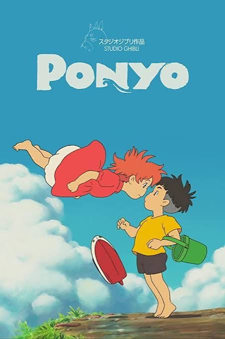
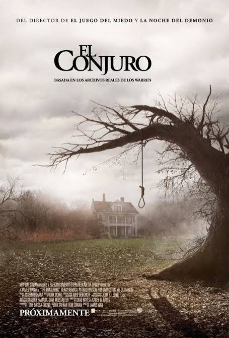

Catálogo completo de peliculas
Spiderman
Peter Parker es un tímido estudiante que obtiene poderes arácnidos tras ser mordido por una araña genéticamente modificada.
Me rompiste el corazón
Narra el romántico y tormentoso amor entre el folclorista chileno Roberto Parra y la emblemática "Negra Ester", explorando la bohemia de los barrios marginales de Valparaíso y Santiago. La película inspiró la obra teatral La Negra Ester.
El libro de la vida
La familia de Manolo quiere que sea torero, pero él desea ser músico. El joven vivirá una aventura mágica por tres mundos de fantasía y, durante su odisea, tendrá que decidir si sigue los impulsos de su corazón o el deseo de su familia.

Ponyo
Sosuke, un niño de cinco años, vive en lo más alto de un acantilado que da al mar. Una mañana, mientras juega en una playa rocosa que hay bajo su casa, se encuentra con una ‘pececita’ de colores llamada Ponyo, con la cabeza atascada en un tarro de mermelada. Sosuke la rescata y la guarda en un cubo verde de plástico. Sin embargo, el padre de Ponyo, Fujimoto, que en otro tiempo fue humano y ahora es un hechicero que vive en lo más profundo del océano, la obliga a regresar con él a las profundidades del mar.

El Conjuro
En 1971, Carolyn y Roger Perron trasladan a su familia a una casa de campo en ruinas de Rhode Island y pronto comienzan a suceder cosas extrañas a su alrededor con un terror de pesadilla cada vez mayor. Desesperada, Carolyn contacta a los notados investigadores paranormales, Ed y Lorraine Warren, para examinar la casa. Lo que los Warren descubren es toda una zona inmersa en una atormentación satánica que ahora apunta a la familia Perron dondequiera que vayan. Para detener este mal, los Warren tendrán que invocar todas sus habilidades y fuerza espiritual para derrotar a esta amenaza espectral en su origen que amenaza con destruir a todos los involucrados.
Rápido y Furioso: Reto Tokio
Cuando el alborotador Sean Boswell tiene que elegir entre ir a la cárcel o irse de Estados Unidos a Tokio, Japón, elige lo último. En el otro lado del mundo, descubre sin darse cuenta el mundo de las carreras de derrapes, un fenómeno importante en Japón, cuando desafía al "Rey del derrape", Takashi a correr y aterriza en deuda con uno de sus socios comerciales, Han Seoul-Oh, quién está buscando a alguien fuera de la influencia de Takashi en quien confiar.
Guerra de Novias
Emma (Anne Hathaway) y Liv (Kate Hudson) son amigas desde que eran pequeñas y desde entonces han planeado con todo lujo de detalles como serían sus bodas. Hay un elemento fundamental: la ceremonia debe celebrarse en el Hotel Plaza, el lugar de moda de las bodas en Nueva York. Las jóvenes tienen 26 años y ya están dispuestas a organizar la boda, sin embargo, un error en la concertación de las fechas hará que ambas coincidan. A partir de entonces, se producirá una disputa entre ellas por ver quién consigue hacer su ceremonia en el lugar soñado.